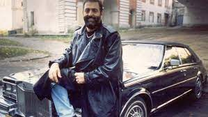

Hello Mr. Shafutinsky we are glad to welcome you in 3th september!

Михаи́л Заха́рович Шуфути́нский - советский и российский эстрадный певец, пианист, исполнитель
Михаил Шуфутинский родился 13 апреля 1948 года в Москве, в семье участника Великой
Отечественной войны — врача Захара Давидовича Шуфутинского[2].
Бабушка с дедушкой по отцу Берта Давидовна и Давид Яковлевич, были родом с Украины,
из Елисаветграда
(Кропивницкого) и Черкасс соответственно. Они занимались воспитанием
мальчика после того, как погибла его мать. Шуфутинскому тогда было пять лет
В 1990 году впервые после эмиграции приехал в СССР.
- В 1997 году написал автобиографическую книгу «И вот стою я у черты…».
- В 2003 году переехал в Россию на постоянное место жительства.
- В 2003 году переехал в Россию на постоянное место жительства.
- В 2003 году переехал в Россию на постоянное место жительства.
- В 2003 году переехал в Россию на постоянное место жительства.
- В 2003 году переехал в Россию на постоянное место жительства.
- В 2003 году переехал в Россию на постоянное место жительства.
- В 2003 году переехал в Россию на постоянное место жительства.
- В 2003 году переехал в Россию на постоянное место жительства.